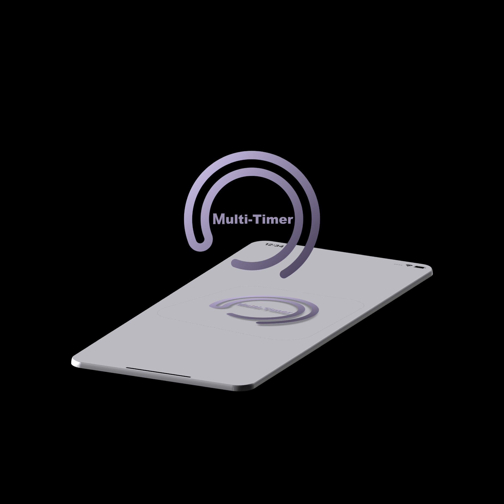
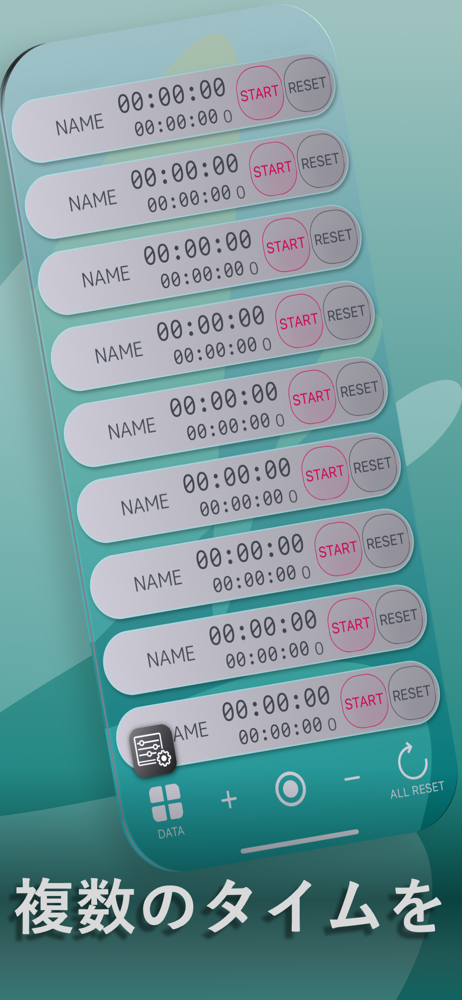
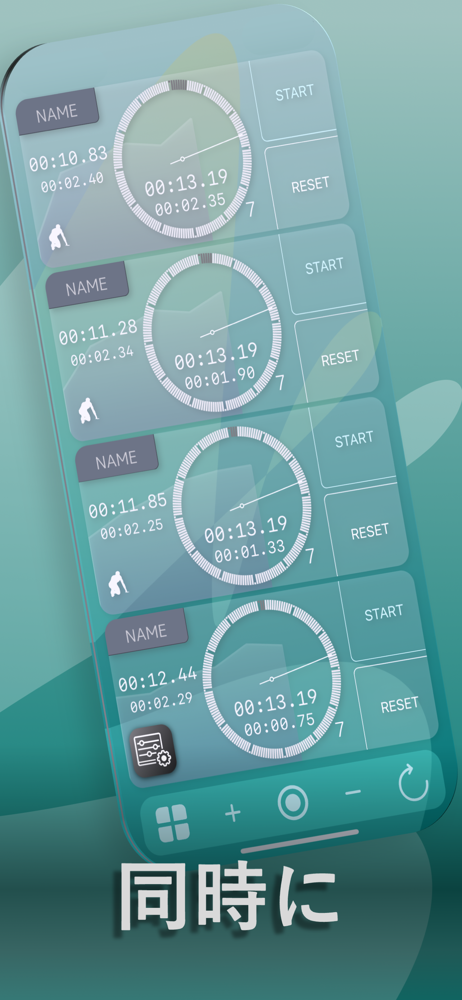
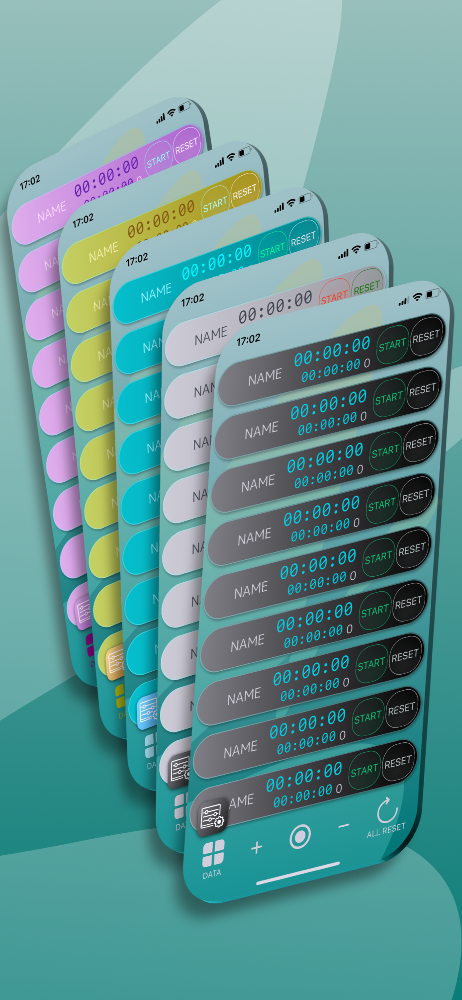
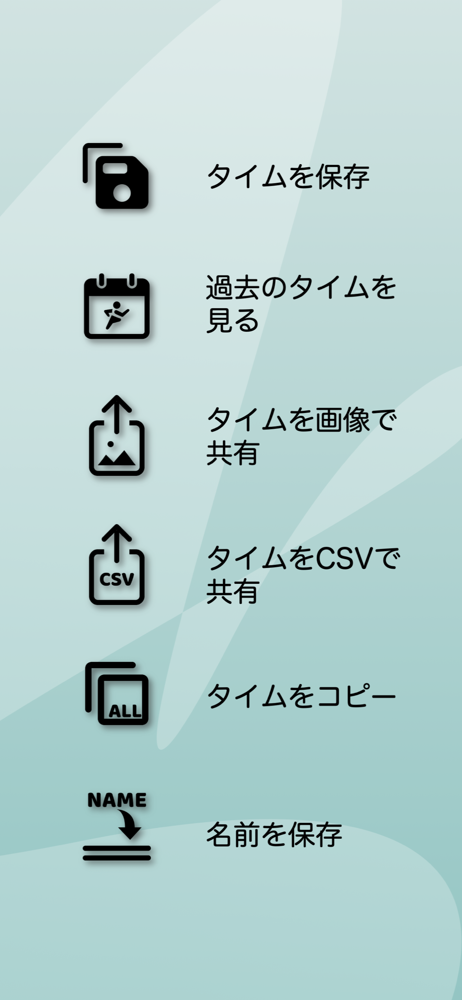

1画面に複数の計測欄
それぞれを個別にスタート・ストップ・リセットでき、複数の計測をまとめて操作することもできます。
複数ストップウォッチ・タイマー
複数人・複数対象のストップウォッチやタイマーを、1台のiPhone・iPadで同時に操作。陸上や水泳などのスポーツから、レース運営、ゲーム、ビジネス現場まで、一つずつでは追いつかない時間管理を支えます。
累計15.8万ダウンロード2026年9月20日現在
App Storeで見る
できること
それぞれを個別にスタート・ストップ・リセットでき、複数の計測をまとめて操作することもできます。
選手ごとのタイムやインターバル、複数作業のカウントダウンなど、目的に合わせて使えます。
過去の計測を確認し、結果を画像やCSVファイルで共有できます。データのコピーにも対応しています。
選手名や項目名を付けて見分けやすく整理できます。カラーテーマやダークな表示も選べます。
ユーザーから届いた利用例
ユーザーフィードバック調査とダウンロード傾向から、次のような利用場面が確認されています。用途に合わせて各計測欄へ名前を付け、複数の対象を並行して管理できます。
複数選手のタイムやインターバルを、コーチやマネージャーが1台の端末から同時に記録します。
複数の選手・車両・艇や進行項目を区別しながら、レースや運営に関わる時間を把握します。
参加者やチームごとの持ち時間、複数卓・複数進行のプレイ時間を個別に管理します。
複数作業や工程の時間管理に利用されています。MDMで管理された組織端末にも広く導入されています。
アプリ画面




すぐわかる回答
1台のiPhoneまたはiPadで、複数のストップウォッチやタイマーを同じ画面から操作できる計測アプリです。
ユーザーフィードバックでは、陸上・水泳の選手管理、競輪・自動車レース・競艇の時間管理、ゲーム時間の管理、ビジネス現場での複数作業の時間管理などが報告されています。ダウンロード傾向から、MDMで管理された組織端末にも広く導入されています。
はい。計測結果を保存して過去のデータを確認できるほか、画像やCSVファイルでの共有、データのコピーができます。
はい。それぞれの行に操作ボタンがあり、個別にスタート・ストップ・リセットできます。
開発者
医師・ランナーとして活動しながら、iOSアプリの企画・開発・運営を行う個人開発者です。Multi-Timerは、実際の練習で複数人を計測する際の課題から生まれました。